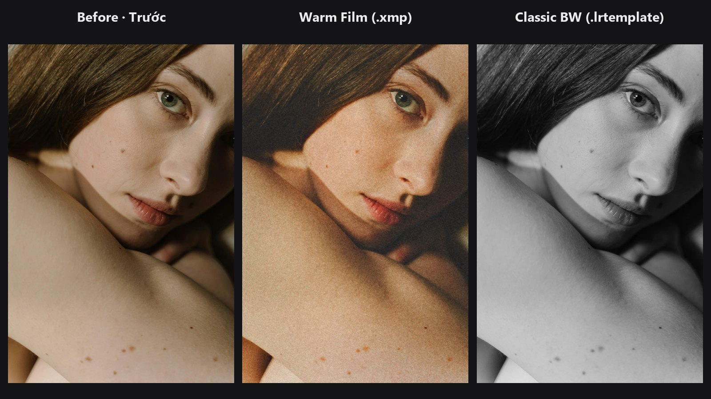
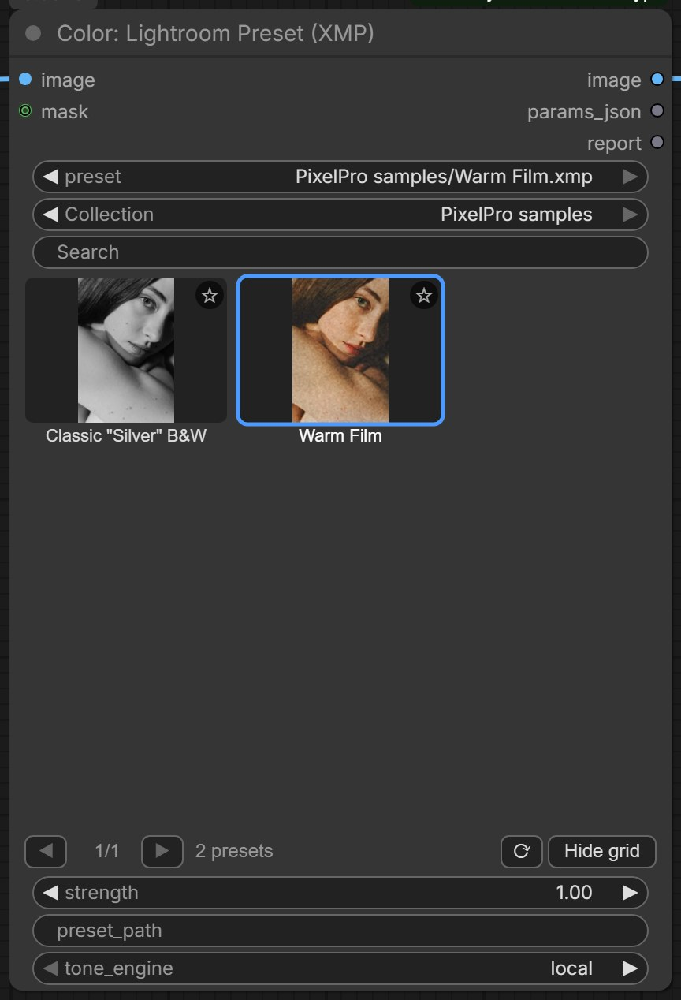

Lightroom Preset¶
Use the presets you already own from Lightroom Classic or Camera Raw on any image in ComfyUI. Pick a preset from a thumbnail grid, set the amount, and the node also tells you which settings it could and could not carry over.

The picture shows the original, the bundled Warm Film sample (.xmp) and the bundled Classic BW sample (.lrtemplate).
| In ComfyUI | Add Node → ComfyUI-JH-PixelPro → color → Color: Lightroom Preset (XMP) |
| Good for | Reusing a Lightroom look on generated or edited images, keeping one grade across a batch, starting point for a ColorLab grade, browsing a large preset library visually |
| Memory | Peak VRAM 0.82 GB on the docs image |
When to use it¶
A Lightroom preset is a list of slider values: Exposure +0.35, Highlights −45, a tone curve, some colour grading and so on. This node reads that list and recreates the look with the pack's own ColorLab engine, which has the same panels as Camera Raw. It is an approximation written for this pack, not Adobe's code, so judge the result by eye rather than expecting a pixel match.
Two file types are read:
- .xmp: the modern preset format of Lightroom Classic and Camera Raw.
- .lrtemplate: the older Lightroom preset format. It is read as plain data; no Lua code inside the file is ever run.
The node gives you three things: the graded image, the preset as ColorLab settings (params_json) that you can fine-tune or reuse, and a text report of what was applied.
What is translated¶
| Lightroom panel | Carried over |
|---|---|
| Basic | Exposure, Contrast, Highlights, Shadows, Whites, Blacks (2012 process), Texture, Clarity, Dehaze, Vibrance, Saturation |
| White balance | Relative Temp / Tint. Absolute white balance (Kelvin, or Daylight, Cloudy, Shade, …) is converted relative to the photo's as-shot white. This is an approximation and is noted in the report. |
| Tone curve | Point curves (master, red, green, blue) and the parametric (region) curve |
| HSL / Color | Hue, saturation and luminance for all 8 colours |
| Color Grading | Shadows, midtones and highlights wheels with luminance, and Balance |
| B&W | Black-and-white conversion and the gray mixer, including magenta |
| Calibration | Red, green and blue primary hue and saturation, shadow tint |
| Effects | Grain, post-crop vignette |
Exposure is applied in linear light, the way Lightroom does it.
What is not possible¶
- Creative profiles such as Adobe's "Vintage 06" or "Artistic" looks. These are Adobe's own built-in colour tables and are not stored in the preset file. The Adobe Color and Adobe Standard profiles count as neutral and are fine.
- Local masks (brush, gradients, subject or sky masks).
- Lens corrections, sharpening and noise reduction. These are detail and optics settings rather than colour, so the report lists them separately.
Empty Point Color slots count as neutral. Everything the node skips is named in the report, never dropped silently.
Quick start¶
- Copy your presets into
ComfyUI/models/lightroom_presets/. Sub-folders become collections. - Load Image → Color: Lightroom Preset (XMP) → Preview Image. Connect
reportto a text display node. - Click a thumbnail in the grid to choose a preset, then run the workflow.
- Lower
strengthif the look is too strong. Read the report to see what was not carried over.
No presets yet?
The pack ships two samples under PixelPro samples/: Warm Film.xmp and Classic BW.lrtemplate. They appear in the list straight away, so you can try the node before copying your own presets.
Settings¶
| Setting | Default | What it does | Tip |
|---|---|---|---|
image |
— | The picture to grade. | |
preset |
first in list | The preset to apply, from the preset folders. The browser grid sets this for you. | Names include the sub-folder, e.g. PixelPro samples/Warm Film.xmp. |
strength |
1.0 | How much of the preset to apply (0 to 2), like Lightroom's preset Amount. 0 returns the original image. | Slider amounts and curves scale with it; colour grading hues stay where they are. 0.5 to 0.8 often looks more natural on portraits. |
preset_path (optional) |
empty | Full path to a preset file anywhere on disk. When filled, it overrides the list. | Handy for a one-off file. It is not added to Recent. |
tone_engine (optional) |
local |
local uses edge-aware tone tools, closer to Lightroom. legacy uses ColorLab's original, simpler tone maths. |
Keep local unless you need to match an older ColorLab result. |
mask (optional) |
none | Limits where the preset applies (white = full effect). | Must match the image size. Use a subject or sky mask to grade only part of the frame. |
Outputs
| Output | What it is |
|---|---|
image |
Your image with the preset applied. |
params_json |
The preset as ColorLab settings, already scaled by strength. Connect it to ColorLab to fine-tune the sliders, or to Apply ColorLab Preset to reuse the same look elsewhere. |
report |
Text listing the preset name, the settings applied, a "Not supported" list, a separate "Detail/optics, not colour" list (sharpening, noise, lens) and any notes, such as the white balance approximation. |
The preset browser¶

Under the preset dropdown the node shows a visual browser:
- Collection: All, ★ Favorites, Recent, and one entry per sub-folder of your preset folder.
- Search: shows only presets whose name contains every word you type.
- Thumbnail grid: three rows of presets. Use ◀ ▶ to page through. The selected preset has a blue outline.
- ☆ star (top right of a tile): click to add or remove a favourite.
- Orange "!" badge (top left of a tile): the preset is only partly supported, for example it uses a creative profile or a local mask.
- Footer: for the selected preset, lists what is not supported; otherwise shows how many presets match.
- ⟳: reloads the preset list, so files you just copied in show up without restarting ComfyUI.
- Hide grid / Show grid: folds the grid away to keep the node small.
Thumbnails show each preset on the image this node processed last. Before the first run they use a generated colour chart (grey ramp, skin, sky, foliage and primary patches). They are rendered on the CPU, about 10 ms each, so they do not compete with a running workflow for the GPU, and they are cached so a page renders only once.
Clicking a tile only changes the preset setting. Saved workflows and API prompts stay exactly the same as if you had picked the preset from the dropdown.
Note
The browser is drawn on the classic node canvas. With ComfyUI's newer Vue node interface turned on, it is not shown; the preset dropdown still works as usual.
Managing a large library¶
- Folders are collections. Organise presets in sub-folders of
ComfyUI/models/lightroom_presets/the same way as your Lightroom preset groups (for examplePortrait/,Film/,B&W/). Each sub-folder appears in the Collection list. - Favourites (★) and Recent (the last 12 presets you ran from the list) are saved in
.jh_presets.jsoninside the preset folder. Every Lightroom Preset node and every workflow shares them, and copying the folder to another machine brings them along. - Search to narrow a collection quickly, e.g.
warm filmfinds names containing both words. - Paging keeps the grid fast: only the visible page is rendered.
- If you use
extra_model_paths.yamlwith alightroom_presetsentry, that folder is used instead. - To compare many presets on one photo at once, use the Lightroom Preset Contact Sheet.
Tips from retouching¶
- Presets made for raw files often push Exposure, Shadows or Dehaze hard, because raw data has more headroom. On a JPEG or a generated image, start with
strengtharound 0.6. - An absolute white balance (Kelvin) in a preset is only an estimate here; the report says so. If the colour looks off, remove the warmth in ColorLab with
wb_temperature. - If a preset shows the orange "!", check the report. When the missing part is a creative profile, the look will be noticeably different from Lightroom.
- Sharpening and noise reduction are never applied. Add Smart Sharpen after the grade if you need it.
- To tweak a preset, send
params_jsoninto ColorLab and adjust from there instead of editing the .xmp file.
Under the hood
The .xmp file is parsed as an XMP packet and every crs: (camera-raw-settings) property is collected, from attributes or child elements. A .lrtemplate is tokenised as a Lua table literal and only the value.settings table is read; nothing is executed. Files over 4 MB are refused. Lightroom Classic still stores shadow and highlight colour-grading hue and saturation under the old SplitToning* keys, while ColorGrade* holds midtones and luminance; both are mapped. The parametric curve is rebuilt as a lookup table and combined with the master point curve. Absolute white balance is turned into a relative Temp shift from the mired difference between the target and the as-shot temperature. The resulting parameters run through the ColorLab pipeline with exposure in linear light. strength scales slider amounts and blends curves towards a straight line; colour-grading hues and switches are kept. The node re-runs automatically when the preset file changes on disk. Source: core/lr_preset.py, core/lr_preset_library.py.
Related nodes¶
- ColorLab to fine-tune the preset's settings from
params_json - Apply ColorLab Preset to reuse the same look on other images
- Lightroom Preset Contact Sheet to compare many presets side by side
- LUT Preset for looks stored as .cube LUTs
Example workflow¶
Lightroom Preset example workflow applies the bundled Warm Film sample to the portrait and shows the report. It uses only core ComfyUI nodes and this pack. Copy workflows/sample_portrait.jpg into ComfyUI/input/.